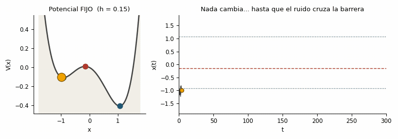
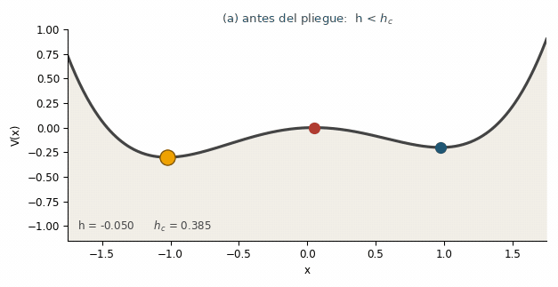
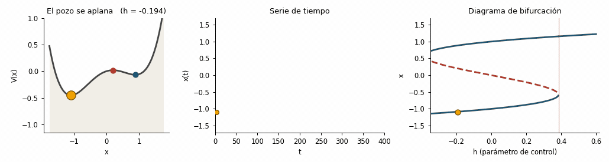

Tipos de transición: bifurcación, ruido, tasa y choque
Objetivos de aprendizaje
- Distinguir los cuatro mecanismos por los que un sistema puede cruzar un punto de no retorno: bifurcación, ruido, tasa y choque.
- Leer el paisaje de potencial antes, en y después del pliegue, y ver cómo la canica lo recorre.
- Anticipar cuándo las señales de alerta temprana funcionan y cuándo no tienen nada que detectar.
1 Un mismo salto, mecanismos distintos
Toda la Parte III descansa sobre un supuesto que conviene hacer explícito desde el principio: que la transición ocurre porque el sistema pierde estabilidad. No es la única forma de saltar de un estado a otro, y la diferencia decide si las EWS sirven o no (Alvarez-Martinez y Miramontes 2026).
El modelo de trabajo de este capítulo es el doble pozo del capítulo 3 con ruido aditivo:
\[ dx = f(x)\,dt + \sigma\,dB, \qquad f(x) = -x^3 + x + h , \tag{1}\]
cuyo paisaje de potencial (recuerda \(f = -dV/dx\)) es
\[ V(x) = \frac{x^4}{4} - \frac{x^2}{2} - h\,x . \tag{2}\]
Aquí hay dos perillas independientes:
- \(h\), el parámetro de control, que inclina el paisaje y puede llegar a destruir un pozo;
- \(\sigma\), la intensidad del ruido, que sacude a la canica dentro del pozo sin cambiar el paisaje.
Siguiendo la clasificación de Ashwin et al. (Ashwin et al. 2012), ampliada con el choque en la tipología de Alvarez-Martinez y Miramontes (2026, sec. 2.6), mover cada perilla —o no mover ninguna— da un mecanismo de tipping distinto:
| Mecanismo | Qué cambia | ¿Ralentización crítica? | ¿EWS clásicas? |
|---|---|---|---|
| Inducido por bifurcación (B-tipping) | \(h\) cruza \(h_c\): el pozo desaparece | Sí, \(\lambda \to 0\) | Sí |
| Inducido por ruido (N-tipping) | Nada; \(\sigma\) empuja sobre la barrera | No | Prácticamente no |
| Inducido por la tasa (R-tipping) | \(h\) cambia demasiado rápido | Ausente | No |
| Inducido por choque (S-tipping) | Una perturbación única y enorme | Ausente | No (solo diagnóstico a posteriori) |
Las tres figuras que siguen reconstruyen la distinción entre los dos primeros, que son los que se pueden simular con Ecuación 1 moviendo una sola perilla.
NotaSobre estas figuras
Cada figura viene en tres formatos: una animación que se ve de inmediato, un panel interactivo donde tú mueves las perillas, y el código ejecutable (Python y R) que la genera. Están reconstruidas desde cero, siguiendo la exposición de las figuras 1–3 de Eirik Myrvoll-Nilsen, Early warning signals (material asociado a Myrvoll-Nilsen et al. (2025)), y la figura 1 de Alvarez-Martinez y Miramontes (2026).
Convención de color en todo el capítulo: azul = punto fijo estable, rojo = punto fijo inestable (el punto de tipping), ámbar = el estado del sistema (la “canica”).
2 Figura 1 — Tipping inducido por ruido
Con \(h = 0.15\) fijo el sistema es biestable: dos mínimos separados por una barrera. El sistema dinámico —y su potencial— no cambian en ningún momento. Las perturbaciones aleatorias, por sí solas, terminan cruzando el punto fijo inestable y llevan al sistema al otro equilibrio.

Figura 1. Tipping inducido por ruido. El sistema dinámico (y su potencial) permanecen inalterados. Las perturbaciones aleatorias por sí solas hacen que el sistema cruce el punto fijo inestable (línea roja discontinua) y se mueva al otro equilibrio.
TipExplóralo: sube y baja el ruido
Con \(\sigma \lesssim 0.20\) el salto casi nunca ocurre dentro del tiempo simulado; con \(\sigma \gtrsim 0.30\) ocurre pronto y puede haber saltos de ida y vuelta (flickering). Cambia la semilla dejando \(\sigma\) fijo: el instante del salto cambia por completo.
Lo importante: antes del salto no pasa nada medible. La varianza y la autocorrelación fluctúan alrededor de un valor constante, porque \(\lambda = |f'(x^*)|\) nunca se acercó a cero. El instante del cruce es un evento de azar: con la semilla cambiada, el salto ocurre antes, después, o no ocurre. Lo que sí es predecible es el tiempo medio de espera, que crece exponencialmente con el cociente entre la altura de la barrera y \(\sigma^2\) (fórmula de Kramers, \(\tau_K \propto e^{\Delta V/\sigma^2}\)).
ImportanteLa trampa del ruido creciente
Si lo que aumenta con el tiempo es \(\sigma\) —y no la cercanía al pliegue—, la varianza de la serie también sube, y lo hace de una forma estadísticamente indistinguible de la ralentización crítica: un falso positivo de manual (Alvarez-Martinez y Miramontes 2026, sec. 2.6.2). En ecología esto no es hipotético: los regímenes de precipitación, temperatura y perturbación son cada vez más variables. El antídoto es contrastar la varianza con estimaciones directas de la tasa de retorno (experimentos de pulso, ajuste de deriva-difusión) o con proxies independientes de la variabilidad del forzamiento.
3 Figura 2 — El potencial antes, en y después de la bifurcación
Ahora la otra perilla. Al aumentar \(h\), el pozo izquierdo se hace cada vez menos profundo hasta fundirse con el máximo y desaparecer: eso es la bifurcación silla-nodo (fold), que ocurre en
\[ h_c = \frac{2}{\sqrt{27}} \approx 0.385 . \tag{3}\]

Figura 2. El potencial sobre la variable de estado antes, en y después de que el parámetro de control \(h\) alcanza el punto de bifurcación. Los puntos fijos estables se muestran en azul; los inestables (el punto de tipping) en rojo. Al regresar \(h\) a su valor inicial la canica no vuelve: eso es la histéresis del capítulo 3.
TipExplóralo: acerca \(h\) al pliegue y mira \(\lambda\)
El panel derecho muestra la tasa de retorno \(\lambda = |f'(x^*)|\) de la rama estable izquierda. Al acercar \(h\) a \(h_c\), \(\lambda \to 0\) y la varianza estacionaria \(\sigma^2/2\lambda\) se dispara. Ese es todo el contenido del capítulo siguiente, visto desde la geometría.
Fíjate en el panel (b): el mínimo izquierdo y el máximo se tocan. Ahí la curvatura del potencial se anula, \(f'(x^*) = 0\) y por tanto \(\lambda = 0\). Ese es exactamente el punto donde la varianza \(\sigma^2/2\lambda\) diverge y la autocorrelación tiende a 1 —el contenido del capítulo siguiente—. La ralentización crítica no es un accidente: es la geometría del pliegue vista desde la serie de tiempo.
4 Figura 3 — Tipping inducido por bifurcación
Ahora dejamos que \(h\) suba lentamente, con un ruido pequeño (\(\sigma = 0.03\), siete veces menor que en la figura 1). El pozo izquierdo se vuelve cada vez más plano hasta desaparecer, y el sistema no tiene más remedio que caer al otro equilibrio.

Figura 3. Tipping inducido por bifurcación. Cambios graduales en el parámetro de control alteran el sistema dinámico hasta alcanzar una bifurcación, donde el punto fijo izquierdo pierde su estabilidad y el sistema cae en un equilibrio distinto.
TipExplóralo: ¿qué tan rápido subes \(h\)?
Baja la duración \(T\) de la rampa (es decir, acelera el forzamiento) y observa el retraso: el salto ocurre con \(h\) cada vez mayor que \(h_c\), porque el estado ya no alcanza a seguir al equilibrio que se le escapa. Ese retraso es la puerta de entrada al R-tipping.
El panel derecho es la misma trayectoria dibujada contra \(h\) en lugar de contra \(t\): la canica sigue la rama estable inferior (azul) mientras existe, la rama inestable (rojo, discontinua) baja a su encuentro, ambas se aniquilan en el pliegue y el estado salta a la rama superior. Dos detalles que suelen sorprender:
- La trayectoria se despega de la rama estable poco antes del pliegue: con \(\lambda \to 0\) el sistema ya no alcanza a seguir al equilibrio.
- El salto ocurre con \(h\) ligeramente mayor que \(h_c\). Ese retraso es real y crece con la velocidad de la rampa (es la puerta de entrada al tipping inducido por la tasa).
NotaLos otros dos mecanismos: tasa y choque Avanzado
R-tipping (inducido por la tasa) (Ashwin et al. 2012). El sistema puede saltar aunque el parámetro nunca cruce \(h_c\), si \(h\) se mueve demasiado rápido para que el estado alcance a seguir a su equilibrio. Formalmente, ocurre cuando \(|\dot{h}|\) supera un umbral crítico que depende de la geometría de la variedad estable en el plano \((h, x)\). Como \(\lambda\) nunca se acerca a cero —el sistema es siempre formalmente estable respecto de su \(h\) instantáneo—, no hay ralentización crítica: la autocorrelación y la varianza pueden incluso bajar ligeramente mientras el sistema persigue a un atractor que huye (Alvarez-Martinez y Miramontes 2026, sec. 2.6.3). Es el mecanismo más preocupante en clima y ecología, precisamente porque los forzamientos actuales son rápidos.
S-tipping (inducido por choque). Una perturbación única y de gran amplitud —un evento térmico anómalo que blanquea un arrecife, un megaincendio— desplaza el estado directamente a la otra cuenca de atracción, sin importar qué tan lejos estuviera el sistema del pliegue. Por definición no hay dinámica precursora: ninguna EWS puede anticiparlo. Lo que sí informa es el comportamiento posterior al choque (velocidad de recuperación, trayectoria en el espacio de estados), que es diagnóstico retrospectivo de resiliencia, no aviso prospectivo (Alvarez-Martinez y Miramontes 2026, sec. 2.6.4).
5 ¿Por qué esto decide si las EWS sirven?
Contrastemos los dos escenarios simulables con la herramienta que usaremos en el resto de la Parte III: varianza y autocorrelación de retardo-1 en ventana móvil sobre el tramo anterior al salto, resumidas con el \(\tau\) de Kendall (tendencia monótona, \(+1\) = crece siempre).
Los dos saltos se ven iguales en la serie de tiempo, pero solo uno venía anunciado. En el escenario A los \(\tau\) rondan cero: no había nada que detectar, porque la resiliencia del pozo nunca disminuyó. En el escenario B ambos \(\tau\) son claramente positivos: la ralentización crítica dejó su huella.
De ahí tres consecuencias prácticas que vale la pena tener presentes durante todo lo que sigue:
- Una EWS ausente no prueba que el sistema esté a salvo. Puede tratarse de un mecanismo tipo ruido, tipo tasa o tipo choque.
- Una EWS presente no prueba que el salto sea inminente. Los indicadores informan sobre la aproximación a la inestabilidad, no sobre el momento, la magnitud ni la naturaleza del cambio que viene (Alvarez-Martinez y Miramontes 2026). Hace falta cuantificar la incertidumbre; ese es justamente el aporte de los modelos bayesianos con parámetros dependientes del tiempo (Myrvoll-Nilsen et al. 2025), que estiman la tendencia y su credibilidad en lugar de leer un \(\tau\) aislado.
- Con ruido alto, los mecanismos se mezclan. El sistema puede saltar por ruido antes de llegar al pliegue, acortando o borrando la ventana de aviso (Boettiger y Hastings 2012).
NotaEn tu máquina: el mismo diagnóstico con
ewstools
Todo el curso computa las EWS “a mano” en el navegador para que se vea la mecánica. En un flujo real conviene usar la biblioteca dedicada ewstools (Bury 2023), que implementa el mismo pipeline y bastante más. Este bloque no se ejecuta aquí; cópialo a tu entorno local (ver el apéndice B):
# Python (local): pip install ewstools
import ewstools, pandas as pd
ts = ewstools.TimeSeries(data=preB, transition=len(preB)) # tramo pre-transición
ts.detrend(method="Gaussian", bandwidth=0.2) # 0.2 = fracción de la serie
ts.compute_var(rolling_window=0.25)
ts.compute_auto(rolling_window=0.25, lag=1)
print(ts.compute_ktau()) # {'variance': ..., 'ac1': ...}6 Ejercicios
TipEjercicio 5.1 — El ruido manda (computacional)
En la figura 1 cambia sigma a 0.12 y luego a 0.35, dejando todo lo demás igual. ¿En qué caso ocurre el salto y en cuál no? Prueba también dos o tres semillas distintas con el mismo sigma. (En el panel interactivo puedes hacerlo sin escribir código.)
NotaSolución
Con sigma = 0.12 el sistema casi nunca cruza la barrera en \(t \le 400\): el tiempo medio de espera crece exponencialmente al reducir el ruido (Kramers). Con sigma = 0.35 el cruce es rápido e incluso puede haber saltos de ida y vuelta (flickering, un indicador por derecho propio en sistemas biestables). Cambiando la semilla el instante del salto cambia por completo: en el tipping inducido por ruido la fecha no es predecible, solo su distribución.
TipEjercicio 5.2 — ¿Dónde salta realmente? (computacional)
En la figura 3, la rampa recorre \(h \in [-0.2, 0.6]\) en \(T = 400\). Repite con T = 100 y con T = 1600 (ajustando n = int(T/dt)) y anota el valor de \(h\) en el salto. ¿Se acerca o se aleja de \(h_c \approx 0.385\)? Contrasta tus números con el deslizador de \(T\) del panel interactivo.
NotaSolución
Cuanto más rápida la rampa, mayor el retraso: el salto ocurre con \(h\) más grande, porque el estado no alcanza a seguir al equilibrio que se le escapa (con \(T=100\) ronda \(h \approx 0.45\); con \(T=800\), \(h \approx 0.40\)). Con rampas muy lentas el salto se pega a \(h_c\) (y el ruido incluso puede adelantarlo). El retraso escala como una potencia de la velocidad de la rampa: es el puente conceptual hacia el tipping inducido por la tasa.
TipEjercicio 5.3 — Diagnóstico
Un colega te muestra una serie de abundancia de una población que colapsa en 2019. Calcula varianza y AC(1) en ventana móvil y encuentra \(\tau \approx 0.05\) para ambas. Concluye que “el colapso no fue una transición crítica”. ¿Es válida la conclusión?
NotaSolución
No, o al menos no sin más información. \(\tau \approx 0\) es compatible con (i) un colapso inducido por ruido, (ii) uno inducido por la tasa, (iii) uno inducido por choque —un evento extremo único—, y también con (iv) una bifurcación real cuya señal se perdió por muestreo escaso, ventana mal elegida o detrending agresivo. Las EWS son evidencia sobre el mecanismo, no una prueba binaria: hay que acompañarlas del conocimiento del sistema y de una evaluación de incertidumbre (Alvarez-Martinez y Miramontes 2026).
TipEjercicio 5.4 — Identifica el mecanismo
Para cada caso, di qué mecanismo (B, N, R o S) es el más plausible y si esperarías ver EWS: (a) un arrecife que se blanquea tras una única ola de calor marina récord; (b) un lago somero que se vuelve turbio tras dos décadas de fertilización creciente; (c) una población pequeña que se extingue en un año inusualmente seco, sin tendencia previa; (d) un ecosistema sometido a un calentamiento que se acelera más rápido que el tiempo de respuesta de sus especies dominantes.
NotaSolución
- S-tipping: sin precursores, ninguna EWS. (b) B-tipping: el forzamiento lento acerca al sistema al pliegue; es el caso donde varianza y AC(1) deben crecer. (c) N-tipping: el paisaje no cambió, una fluctuación grande cruzó la barrera; la ausencia de señal es la expectativa correcta. (d) R-tipping: no hay que cruzar el umbral estático para saltar, y \(\lambda\) nunca se anula, así que las EWS clásicas fallan. Solo en (b) el kit clásico está teóricamente justificado (Alvarez-Martinez y Miramontes 2026, sec. 2.6).
7 Para seguir
Con la distinción clara, en el capítulo siguiente nos concentramos en el caso que sí deja huella —el inducido por bifurcación— y derivamos, desde la tasa de retorno \(\lambda\), por qué la varianza y la autocorrelación crecen antes del salto.
Referencias
Alvarez-Martinez, Roberto, y Pedro Miramontes. 2026. «Early Warning Signals in Ecological Time-Series». Entropy 28 (6): 628. https://doi.org/10.3390/e28060628.
Ashwin, Peter, Sebastian Wieczorek, Renato Vitolo, y Peter Cox. 2012. «Tipping Points in Open Systems: Bifurcation, Noise-Induced and Rate-Dependent Examples in the Climate System». Philosophical Transactions of the Royal Society A 370 (1962): 1166-84. https://doi.org/10.1098/rsta.2011.0306.
Boettiger, Carl, y Alan Hastings. 2012. «Quantifying Limits to Detection of Early Warning for Critical Transitions». Journal of the Royal Society Interface 9 (75): 2527-39. https://doi.org/10.1098/rsif.2012.0125.
Bury, Thomas M. 2023. «ewstools: A Python Package for Early Warning Signals of Bifurcations in Time Series Data». Journal of Open Source Software 8 (82): 5038. https://doi.org/10.21105/joss.05038.
Myrvoll-Nilsen, Eirik, Luc Hallali, y Martin Rypdal. 2025. «Bayesian Analysis of Early Warning Signals Using a Time-Dependent Model». Earth System Dynamics 16 (5): 1539-56. https://doi.org/10.5194/esd-16-1539-2025.